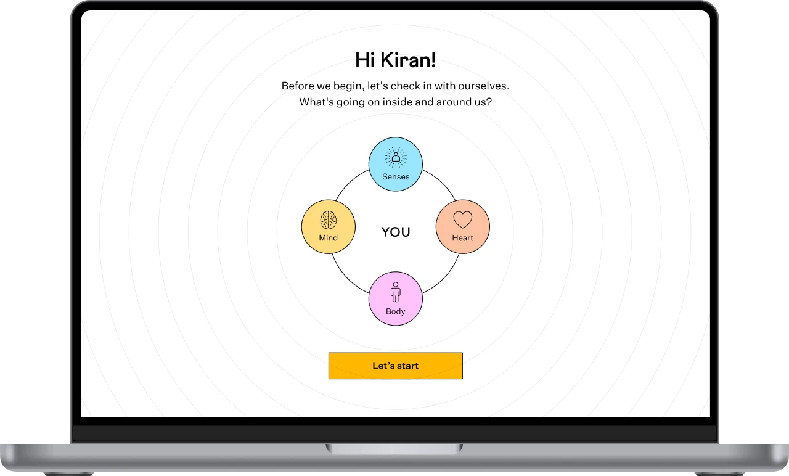
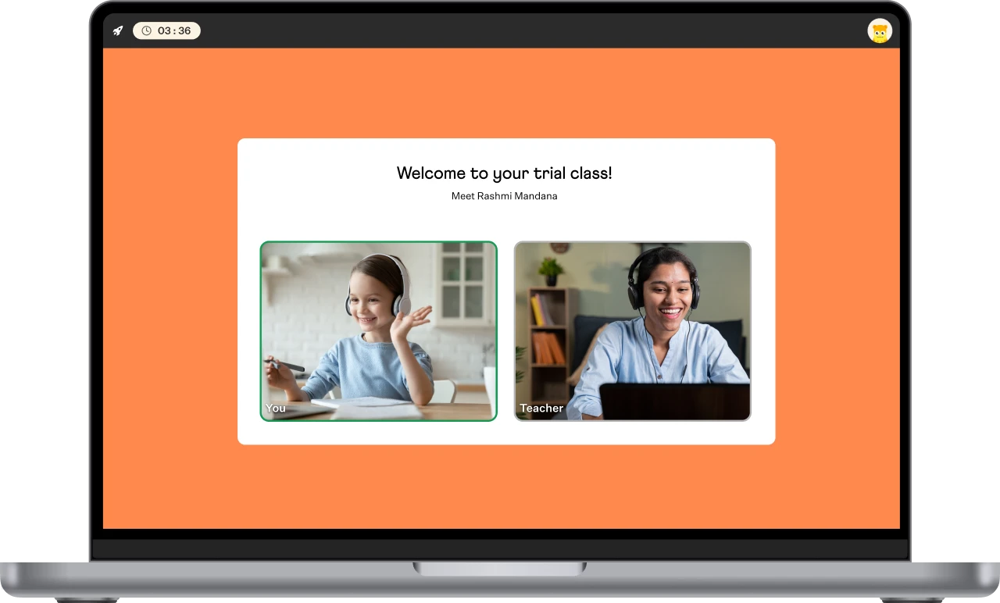
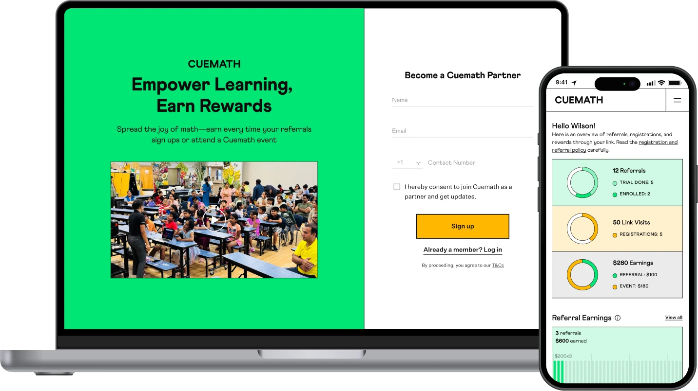

Projects at Cuemath
2024 — 26
Feel Check: Emotional check-in
Student-led emotional check-in for live classes. 75.2% of students ready to learn after Feel Check (n=459 tutor observations).

New Trial Experience: Self-serve funnel
Trial funnel redesign distributing work across system, teachers, parents. −70% Academic Counselor intervention, +50% qualified leads to trial, +9.6% trial-to-paid.

Tutoring home redesign
Designed a goal creation flow, homework queue, and surfaced recent chapters. Benefiting 30K active students and 3K+ tutors.

Cuemath Partners: Affiliate-led event referral
Partner platform for community influencers tracking event referrals and payouts. 138 onboarded, 3,019 active users.